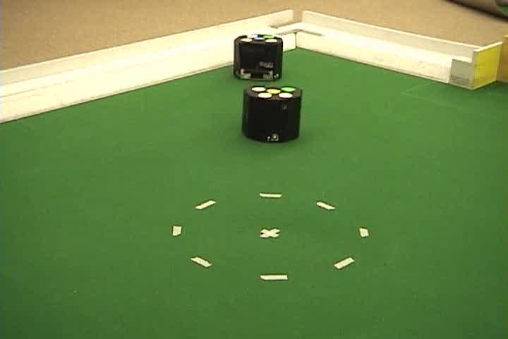
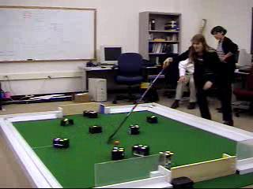
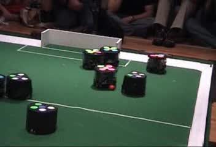
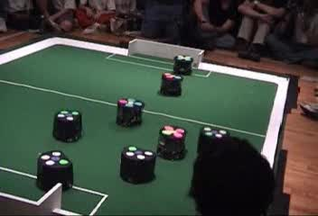

This page is dreadfully out of date. One day I imagine updating it with information on current projects, but my tracke record suggests that this is unlikely.
topClick on a topic to find a list of my publications in the area.
Below you will find video demonstrations of some of my research. The videos show the CMDragons RoboCup teams, in competition, interacting with humans, and learning using techniques I developed for my dissertation.

This is a video of my dissertation work applying WoLF and policy gradient techniques to an adversarial, simultaneous, robot learning problem. The robot at the top of the video is trying to get inside the circle on the field, while the closer robot is trying to stop it. Learning was carried out in simulation for 2000 trials, and on the robots for an additional 2000 trials. The video shows the resulting policies after learning.

CMDragons'02 competed in the RoboCup Small-Size League in 2002. I was highly involved in the development of this team, responsible for motion control, tactical behavior, and strategic team behavior through a play-based, adapting team architecture. We advanced to the quarterfinals at RoboCup. This video shows the team in action against a human playing with a hockey stick. Although our robots can't see the woman or the hockey stick, they can still put up a strong defense.


Two goals from the finals of the American Open in 2003. In both videos, the CMDragons are attacking the goal at the top of the screen, while Cornell BigRed are attacking the goal at the bottom. CMDragons not only won this match, but swept the entire competition, scoring ten goals to zero (at which point a match is ended early) against all five of its opponents. Incidentally, I am the announcer that you can hear in the video.
top